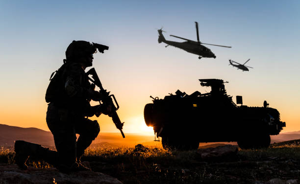

Role and Purpose
The primary role of soldiers is to defend their country's sovereignty, protect its citizens, and maintain peace and security. They carry out a range of tasks and operations as directed by their superiors.
Training and Preparation
Soldiers undergo rigorous training to develop physical fitness, combat skills, and tactical knowledge. Training includes marksmanship, physical conditioning, field exercises, military discipline, and learning about the laws and rules of armed conflict.
Duties and Missions
Soldiers fulfill a wide range of duties and missions. These can include combat operations, peacekeeping and stabilization missions, counterterrorism efforts, disaster relief operations, training exercises, and support roles both domestically and internationally.

Attributes and Skills
Soldiers are expected to possess certain attributes and skills such as physical stamina, mental resilience, discipline, teamwork, adaptability, problem-solving, leadership, and decision-making abilities. These enable soldiers to perform effectively in demanding and dynamic situations.
Sacrifice and Service
Soldiers willingly put themselves in harm's way and may face personal sacrifices, including time away from their families and exposure to dangerous environments.